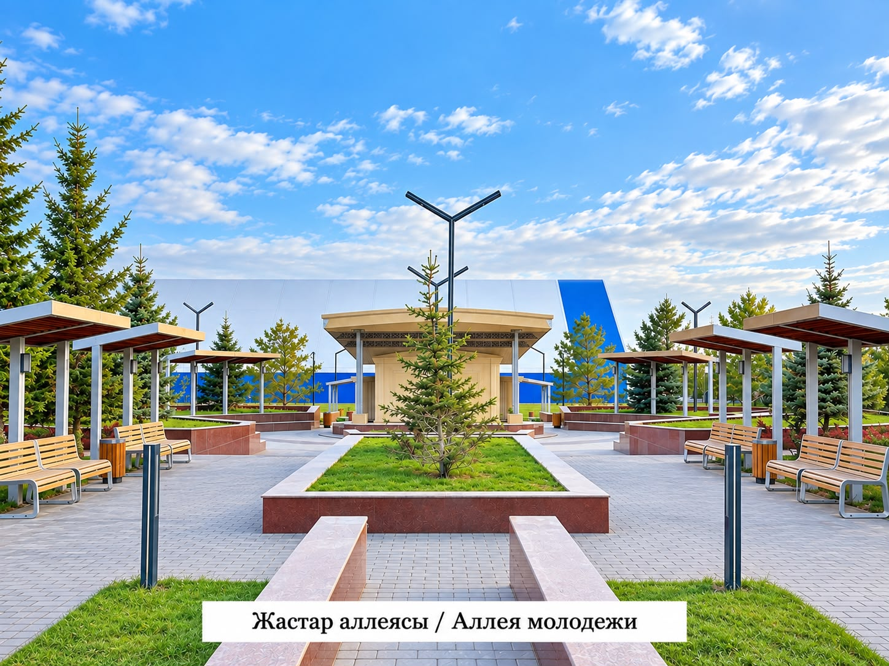

Аллея молодёжи в селе Шахтёрском — это благоустроенная парковая зона отдыха, ставшая главным центром общественной и культурной жизни сельского округа. Парк был построен и передан в дар жителям села руководителем ТОО «Шахтёрское» Георгием Георгиевичем Прокопом. Аллея находится в шаговой доступности от спортивного кластера (ФОКа, бассейна и крытого хоккейного корта), образуя единую рекреационную зону села.

Аллея молодёжи в селе Шахтёрском — это благоустроенная парковая зона отдыха, ставшая главным центром общественной и культурной жизни сельского округа. Парк был построен и передан в дар жителям села руководителем ТОО «Шахтёрское» Георгием Георгиевичем Прокопом. Аллея находится в шаговой доступности от спортивного кластера (ФОКа, бассейна и крытого хоккейного корта), образуя единую рекреационную зону села.
Каждый вечер здесь собираются местные школьники, студенты и взрослые жители: на площадке организуются творческие вечера, молодые люди поют под гитару, играют на музыкальных инструментах и проводят время на свежем воздухе. Проект признан одним из лучших примеров благоустройства сельских территорий в Карагандинской области.